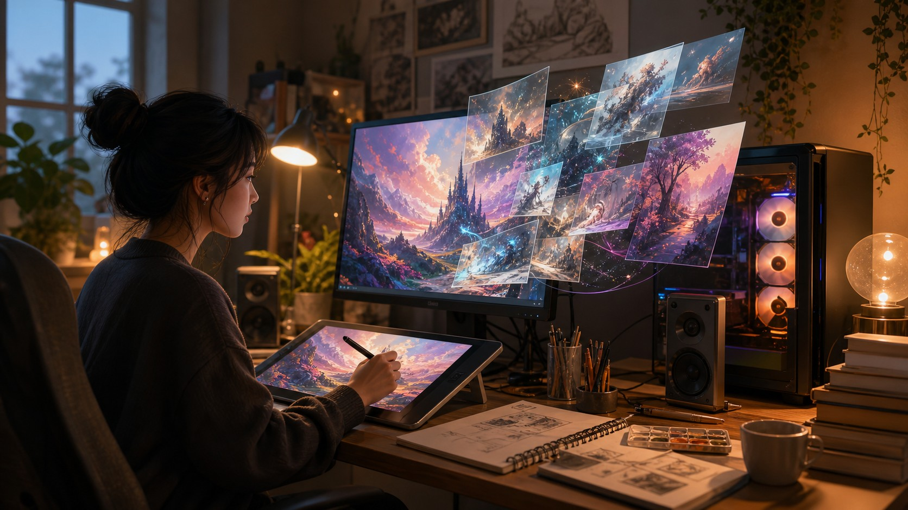

SwarmUI — 내 PC에서 Midjourney 수준 이미지 생성, 구독료 제로

SwarmUI는 월 3만 원 이상의 Midjourney와 비슷한 품질을 본인 컴퓨터에서 무료로 구현하는 오픈소스 이미지 생성 인터페이스입니다. RTX GPU가 있다면 설치 후 즉시 사용 가능하며, ComfyUI보다 진입 장벽이 낮아 로컬 AI에 처음 도전하는 분에게 적합합니다.
인사이트: RTX 4080 이상 GPU를 보유하고 있다면 오늘 바로 설치해볼 만합니다. 데이터·프롬프트가 외부로 나가지 않아 개인 작업 보안에도 유리합니다.